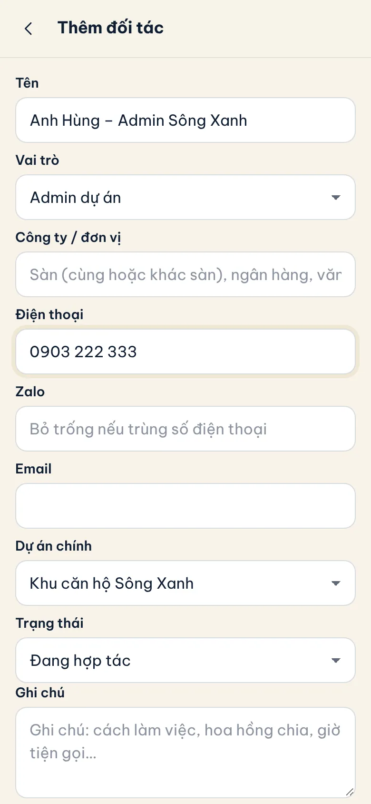
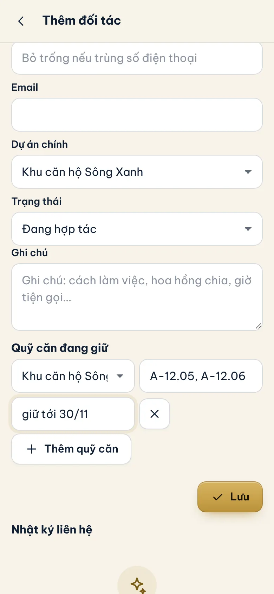
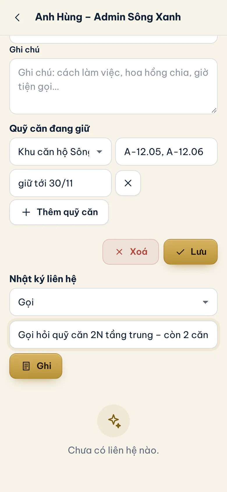
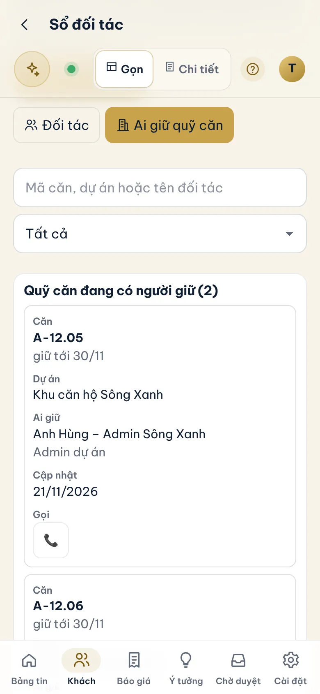

Sổ đối tác
Danh bạ người làm cùng: admin dự án, sàn F1/F2, sale BĐS, cán bộ tín dụng, sale ngân hàng, công chứng, chủ nhà, cộng tác viên (CTV). Ghi ai đang giữ quỹ căn nào và nhật ký gọi/nhắn.
Mở: màn Khách hàng › 🤝 Sổ đối tác, hoặc nút 🤝 Mở Sổ đối tác ở danh sách khách. Sổ đối tác có sẵn trong Gói Cơ bản.
Thêm đối tác
- Bấm + Thêm đối tác.
- Gõ Tên, chọn Vai trò, điền Công ty / đơn vị, Điện thoại, Zalo, Email nếu có.
- Chọn Dự án chính.

- Đối tác đang giữ căn: ở Quỹ căn đang giữ bấm + Thêm quỹ căn, chọn dự án, gõ mã căn (vd
A-12.05, A-12.06) và ghi chú (giá, hạn giữ…).
- Bấm ✓ Lưu.
Ghi nhật ký liên hệ
- Mở đối tác trong danh sách.
- Ở Nhật ký liên hệ, chọn loại (Gọi, Zalo, Gặp, Ghi chú), gõ nội dung.
- Bấm Ghi.

Nhật ký chỉ ghi được sau khi đã lưu đối tác lần đầu.
Tìm ai đang giữ căn
Bấm thẻ Ai giữ quỹ căn: bảng mã căn – dự án – người giữ – ngày cập nhật, có nút 📞 gọi ngay.

Cộng tác viên (CTV)
- Chọn Vai trò là Cộng tác viên (CTV): hiện thêm mục Ghi chú bán hàng – anh/chị tự ghi căn đã bán, ngày chốt, hoa hồng phải trả (app không tự tính, tổng chỉ để tham khảo).
- Khách cũ muốn làm CTV: mở hồ sơ khách, bấm 🤝 Nâng thành CTV. App tạo CTV trong Sổ đối tác (tên, số điện thoại), khách vẫn giữ nguyên trong danh sách. Khách đã là CTV thì nút đổi thành Đã là CTV – mở hồ sơ.
- Danh sách CTV hiện tóm tắt số căn đã ghi và tổng hoa hồng.
Đối tác không làm cùng nữa: đổi Trạng thái sang Lưu trữ (ẩn khỏi danh sách; tick Hiện lưu trữ để xem lại).
← Mục lục · Tiếp: Tạo landing